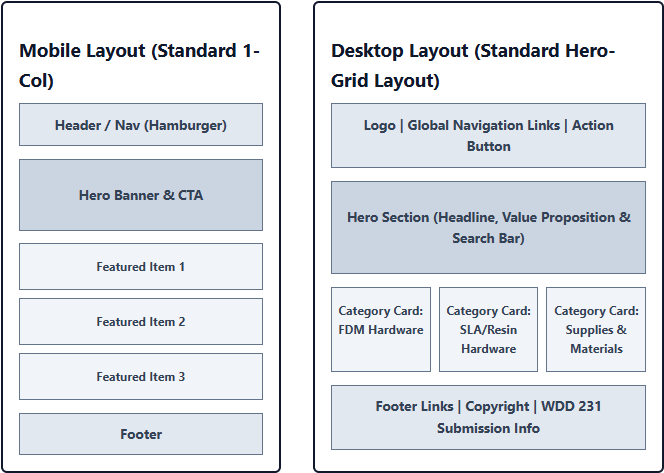

1. Site Name
Site Name: PrintHub 3D
Reasoning: The name "PrintHub 3D" was chosen because it explicitly designates a central community hub and technical reference directory for 3D printing enthusiast hardware, filaments, and resin materials. It is concise, memorable, and directly aligns with the platform's core audience of makers, technicians, and engineering students.
Optional Domain Availability: printhub3d.org
2. Site Purpose
The primary purpose of PrintHub 3D is to solve technical specification fragmentation across various 3D printer manufacturers (such as Voron, Flashforge, and Elegoo). The site provides the following core services and content:
- An interactive, searchable dynamic catalog featuring over 15 FDM/SLA 3D printers and material consumables.
- Comprehensive spec comparisons including build volume, layer resolution, maximum nozzle temperatures, and resin cure times.
- Client-side bookmarking functionality via LocalStorage to save favorited machine configurations.
- A support and custom 3D printing quotation request portal with validated user input forms.
3. Target Audience Scenarios
The target audience includes hobbyist makers, hardware engineers, and rapid prototyping technicians. Key user interaction scenarios include:
- Scenario 1: "What is the build volume, enclosure type, and maximum nozzle temperature of the Flashforge Adventurer 5M compared to custom Voron models?"
- Scenario 2: "How can I filter the catalog to display only SLA/Resin materials that match my fast-curing LCD printer settings and bookmark them for my current project?"
- Scenario 3: "Where can I submit a detailed custom request for a high-precision 3D print quote or technical support ticket?"
4. Color Scheme
The selected color scheme presents a clean, modern, high-contrast industrial aesthetic suited for technical hardware hubs:
#0F172A
(Header, Headings, Footer)
#0EA5E9
(Accent, Borders, Links, Buttons)
#334155
(Primary Body Text)
#F8FAFC
(Document & Page Background)
Color Application Guidelines:
- Deep Navy (#0F172A): Used for top navigation bars, section title headers, footer backdrops, and high-priority container elements.
- Tech Teal (#0EA5E9): Used as the primary interactive accent for call-to-action buttons, active navigation states, underlines, and hyperlink hover effects.
- Slate Charcoal (#334155): Used for main paragraph text to guarantee AAA WebAIM contrast compliance against light backgrounds.
- Soft Ice Gray (#F8FAFC): Used as the body background color across all pages to reduce eye fatigue compared to pure white.
5. Typography
The typography pairing balances technical clarity with clean modern sans-serif aesthetics:
Primary Heading Font: Inter
Inter (Bold / Semi-Bold) - Sample Heading Style
Application: Applied to all main document headings (<h1>, <h2>, <h3>), navigation menu labels, and prominent callout titles.
Body Text Font: Roboto
Roboto (Regular 400) - Sample paragraph text displaying specs like 220x220x250mm build volume, 500mm/s acceleration, and dual-gear extruders.
Application: Applied to all general paragraph content (<p>), list elements (<li>), form input labels, and technical product card descriptions.
6. Wireframes (Home Page - index.html)
Below is the complete wireframe design for the Home Page (index.html), illustrating the responsive layout structure for both mobile and desktop viewports:
